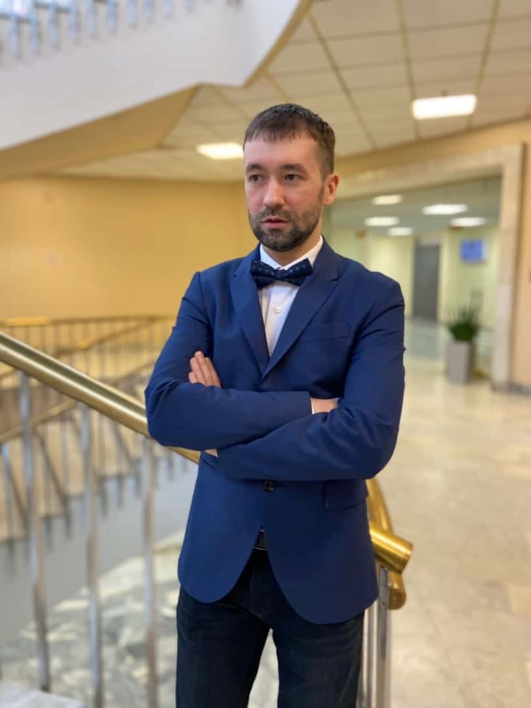

Не откладывайте на завтра заботу о будущем.
© 2023 Валентин Лебединский
У каждого из нас есть ценные вещи, которыми мы дорожим — автомобиль, квартира, дача… И, конечно, самое дорогое и практически невосполнимое — здоровье. Лучшие способы снизить тревогу за свое здоровье, близких, имущество — это постоянная забота и страхование на разные случаи жизни.
НСЖ (накопительное страхование жизни).
Особый вид страхования с возвратом взносов, который также включает
и рисковое страхование жизни. Накопительное страхование жизни
поможет вам создать финансовую подушку безопасности для себя и
своей семьи, а также накопить на крупную покупку, защитить свой
постоянный доход. Жизнь и здоровье застрахованы на сумму
многократно превышающую размер взносов.
НС (Рисковое страхование жизни): предусматривает страхование от
определенных рисков, связанных с жизнью и здоровьем человека,
такие как страхование от клеща, от несчастного случая, страхование
спортсменов, страхование детей от НС, от критических опасных
заболеваний.
Существуют различные виды автомобильного страхования, вот
некоторые из них:
ОСАГО - обязательное страхование автогражданской ответственности
для всех владельцев автомобилей в России. Он покрывает ущерб,
причиненный третьим лицам в результате дорожно-транспортных
происшествий.
КАСКО (комплексное автострахование) - это добровольное
страхование, которое покрывает ущерб, причиненный вашему
автомобилю в результате различных событий, таких как ДТП, угоны,
пожары и стихийные бедствия. Дополнительные виды страхования -
страхование от несчастных случаев пассажиров, страхование от
повреждений автомобиля при стоянке и другие.
Ваш дом - это ваша крепость. Со страхованием недвижимости вы
можете быть уверены в том, что ваш дом и имущество защищены от
различных рисков: залив, пожар, кража, ответственность перед
соседями.
Ипотечное страхование: при заключении кредитного договора,
обязательно страхование недвижимости. Дополнительно, банк обычно
запрашивает и страхование жизни+здоровья. Для спокойствия
покупателя квартиры, есть Страхование титула - это вид
страхования, который защищает владельца недвижимости от
потенциальных убытков, связанных с недействительностью или
оспариванием права собственности на недвижимость.
Путешествия - это возможность познакомиться с миром. Есть несколько видов страхования в данной категории: ВЗР для выезжающих за рубеж, страхование для поездок по России, страхование от невыезда. Основной целью страхования путешественников является обеспечение финансовой защиты в случае несчастного случая, болезни, утраты багажа или отмены или задержки рейса. В зависимости от выбранного плана страховки, страховая компания может предоставить такие услуги, как медицинская помощь в случае заболевания или травмы, покрытие расходов на эвакуацию, компенсацию за утрату, кражу или повреждение багажа, а также возмещение затрат на отель или пропущенные рейсы.
Страхование позволяет переложить финансовый риск на страховую компанию, обеспечивая финансовую защиту от неожиданных расходов при наступлении страхового случая, помогая сохранить стабильность и избежать финансовых кризисов.
Страхование от несчастных случаев предоставляет компенсацию при травмах и инвалидности, помогая справиться с финансовыми трудностями в таких ситуациях.
В долгосрочной перспективе, оплата страховых взносов может оказаться меньше, чем потери в случае страхового случая. С начала действия договора страхования жизнь и здоровье клиента застрахованы на сумму, многократно превышающую размер взноса.
Страхование позволяет лучше планировать будущее, зная, что финансовые обязательства будут выполнены. Страхование может быть частью вашей финансовой стратегии, помогая вам достичь ваших долгосрочных финансовых целей.
Клиент может самостоятельно выбирать, а также менять страховые риски, соответствующие его потребностям, образу жизни и бюджету.

Меня зовут Валентин Лебединский. Для меня страхование – это помощь
людям, это не просто профессия - это источник уверенности для моих
клиентов. Моя цель, подбирать страховые решения, которые позволят
Вам смело встречать любые вызовы жизни.
В настоящее время некоторые виды страхования, такие как
инвестиционные страховки, предоставляют клиентам возможность
инвестировать средства с целью получения прибыли.
Накопительные страховки могут помочь накапливать средства для
будущих нужд, а по окончании договора застрахованный получает
обратно все взносы + инвестиционный доход. И при этом, на протяжении
всего срока договора страхования действовала страховая защита
клиента.
© 2023 Валентин Лебединский